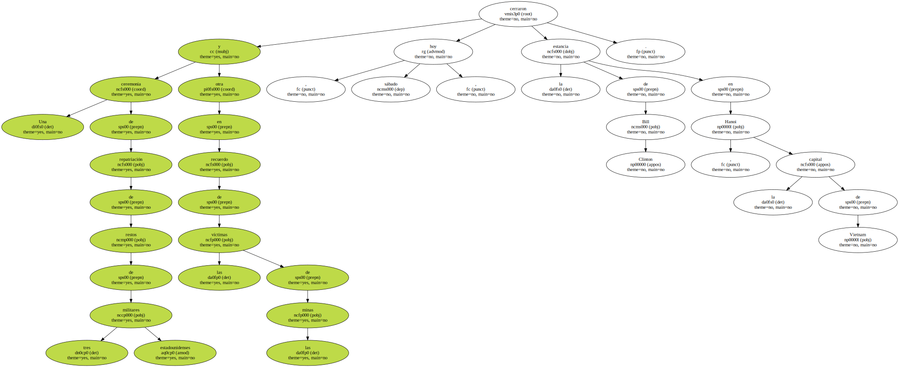
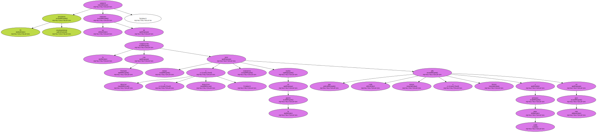
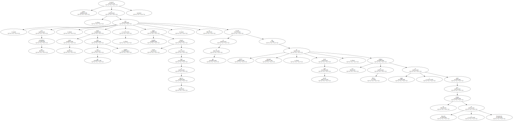
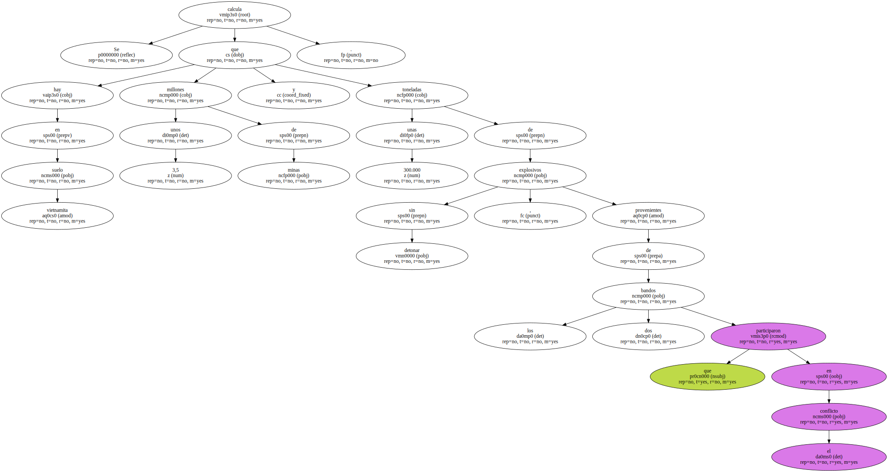
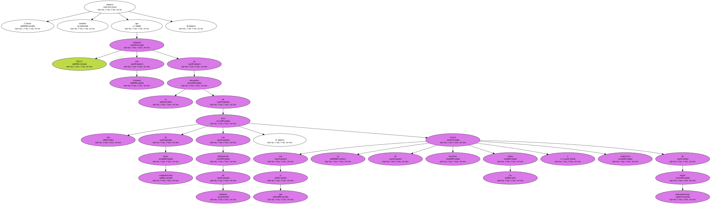
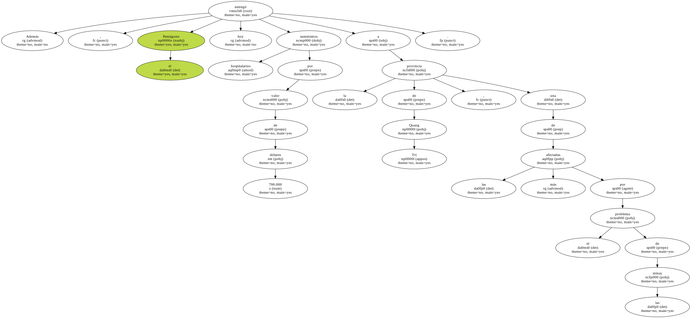
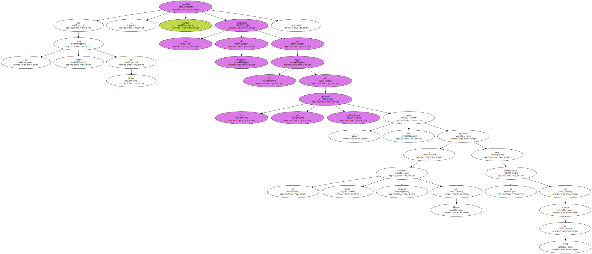
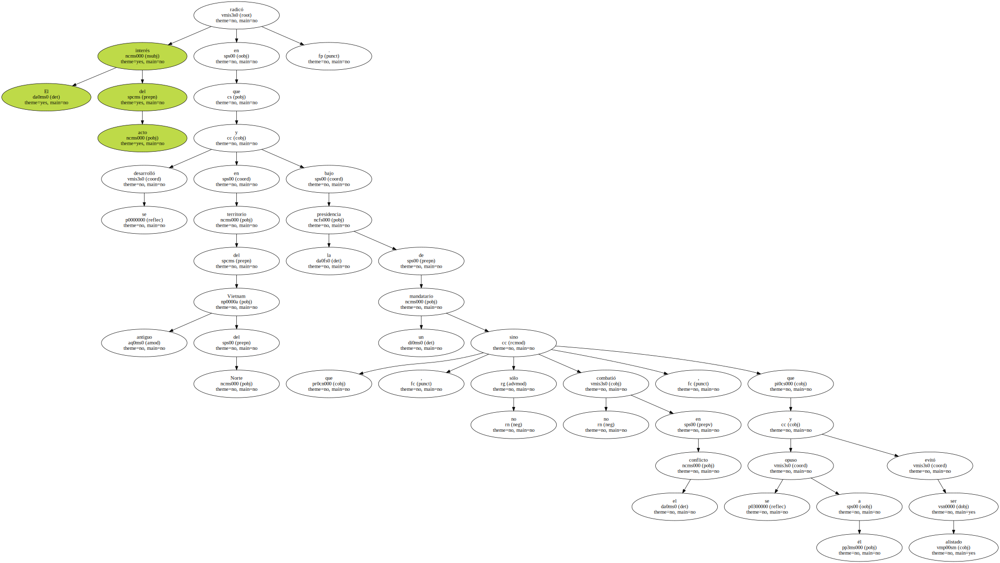
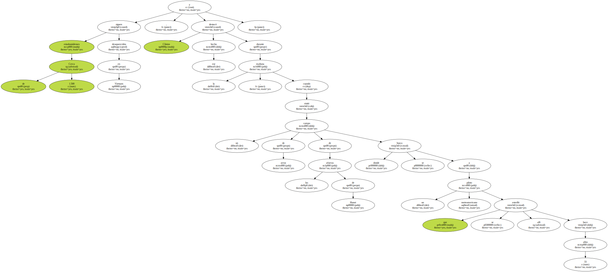

Una ceremonia de repatriación de restos de tres militares estadounidenses y otra en recuerdo de las víctimas de las minas cerraron hoy , sábado , la estancia de Bill Clinton en Hanoi , la capital de Vietnam.
El presidente estadounidense anunció un aumento de la cooperación con Vietnam para detectar y desactivar minas y explosivos usados en la guerra , que cada año matan o hieren a unas 2.000 personas en este país.
" Con toda probabilidad , las minas matan más niños que soldados , y siguen matando mucho después del final de las guerras " , reconoció Clinton en un acto en el que recordó que EEUU ha entregado , desde junio pasado , tres millones de dólares en equipo y ayuda para los trabajos de detección y desactivación.
Se calcula que en suelo vietnamita hay unos 3,5 millones de minas y unas 300.000 toneladas de explosivos sin detonar , provenientes de los dos bandos que participaron en el conflicto.
Clinton anunció también que EEUU trabajará con Vietnam en el desarrollo de una base de datos computerizada con información de entonces , con la que se tratará de localizar las minas y explosivos de origen norteamericano.
Además , el Pentágono entregó hoy suministros hospitalarios por valor de 700.000 dólares a la provincia de Quang Tri , una de las más afectadas por el problema de las minas.
En su último acto en Hanoi , Clinton presidió una ceremonia de homenaje ante los restos de los tres militares estadounidenses , que serán enviados a un laboratorio militar especial de Hawai para su identificación por pruebas de ADN.
El interés del acto radicó en que se desarrolló en territorio del antiguo Vietnam del Norte y bajo la presidencia de un mandatario que , no sólo no combatió en el conflicto , sino que se opuso a él y evitó ser alistado.
Cerca de 1.500 estadounidenses siguen desaparecidos en Vietnam , y Clinton destacó ese hecho durante la mañana , cuando visitó un campo de arroz de las afueras de Hanoi donde se busca a un piloto norteamericano que se estrelló allí hace 33 años.
" Estamos comprometidos en continuar hasta llevar a casa al último héroe caído " , dijo el presidente.